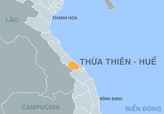
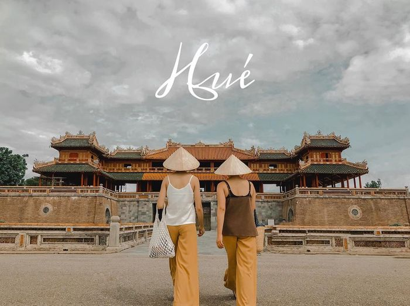
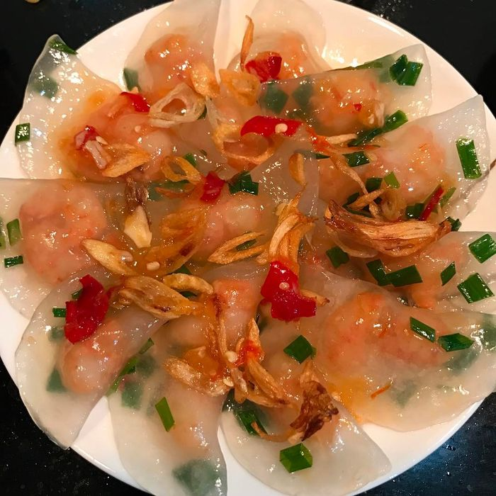
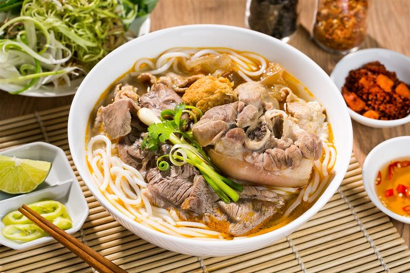
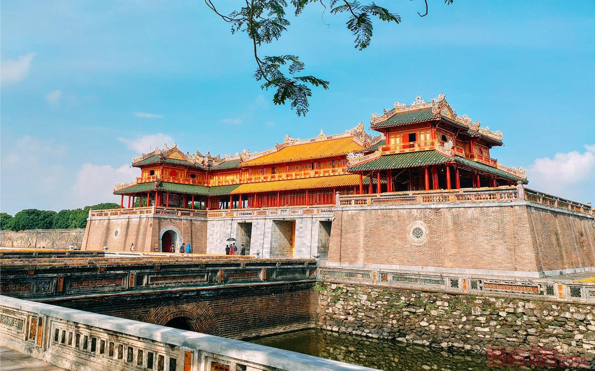
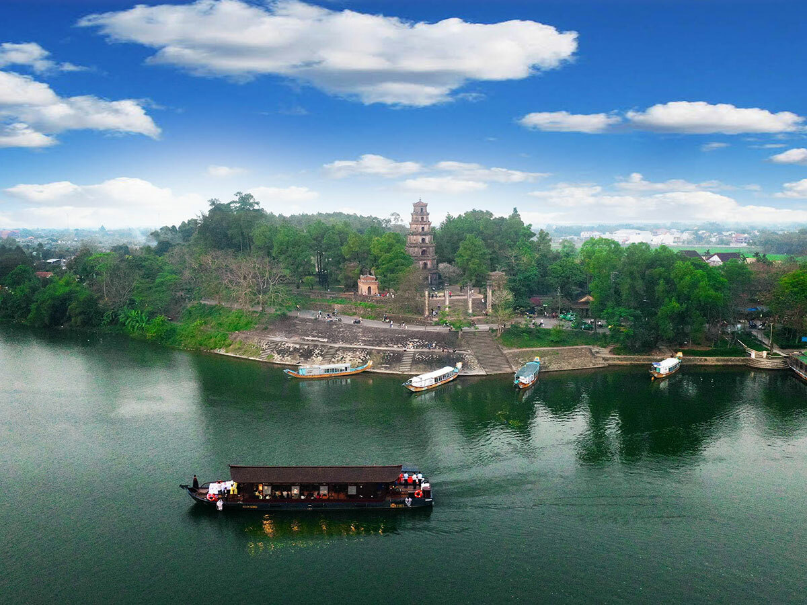
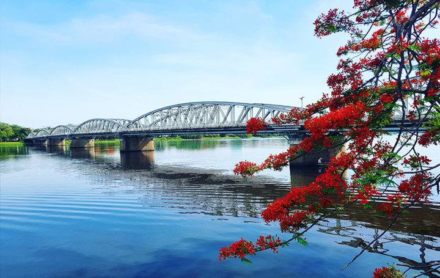

Huế mùa nào đẹp
-Mùa khô (từ tháng 5 đến tháng 9) ở Huế là một trong đáp án hoàn hảo cho câu hỏi đi du lịch Huế mùa nào đẹp. Nhiều tín đồ xê dịch nhận định thời tiết mùa khô ở Huế đẹp vì ít mưa, khô ráo, thuận tiện cho du khách đi tham quan các địa điểm du lịch Huế nổi tiếng, tham gia tắm biển, nhiều hoạt động…
-Mùa xuân ở Huế (từ tháng 1 đến cuối tháng 2) cũng là thời gian lý tưởng để đi du lịch Huế. Bạn sẽ không phải băn khoăn du lịch Huế mùa nào đẹp vì thời tiết mùa xuân ở Huế là thời khắc chuyển tiếp giữa mùa, rất đáng để trải nghiệm, đó là khi cái lạnh tan dần, bắt đầu có nắng ấm.
-Mùa lễ hội ở Huế (khoảng tháng 4) là thời điểm Huế náo nhiệt, sôi động nhất với nhiều hoạt động nghệ thuật và giải trí đặc sắc từ các đoàn nghệ thuật trong nước và nước ngoài, giúp cho vùng đất Cố đô Huế trở nên quyến rũ, rực rỡ hơn bất kỳ thời điểm nào của năm. Du lịch Huế mùa lễ hội, du khách có thể tha hồ chụp ảnh sống ảo vì thành phố được trang hoàng lộng lẫy như những cung điện hoàng gia.
Mùa du lịch ở Huế (có các lễ hội du lịch biển, thường rơi vào thời gian từ tháng 5 – tháng 7) cũng là đáp án cho câu hỏi du lịch Huế mùa nào đẹp, được nhiều tín đồ xê dịch trả lời nhất. Đến Huế mùa du lịch, du khách có thể hòa mình với biển cả, ngắm nhìn cuộc sống của ngư dân, nuông chiều vị giác với rất nhiều món ăn Huế ngon miệng.
Vị trí địa lí
Tỉnh Thừa Thiên Huế nằm ở dải đất ven biển miền Trung Việt Nam, thuộc Bắc Trung Bộ, bao gồm phần đất liền và phần lãnh hải thuộc thềm lục địa biển Đông, có tọa độ địa lý ở 16° – 16,8° vĩ độ Bắc và 107,8° – 108,2° kinh độ Đông. Thừa Thiên Huế cách thủ đô Hà Nội 675 km về phía nam, cách thành phố Đà Nẵng 94 km về phía bắc với ranh giới tự nhiên là dãy núi Bạch Mã

Giới thiệu về Huế - nét đẹp con người
Giới thiệu về Huế thì chắc chắn không thể bỏ qua nét đẹp say lòng của những con người nới đây. Xứ sở mộng mơ này không chỉ thu hút du khách bởi tinh hoa văn hóa, lịch sử mà còn thu phục cảm xúc bởi tính cách dịu dàng, thân thiện của con người .

Người Huế nhẹ nhàng, dễ thương pha chút nét kín đáo, e ấp cùng giọng nói dễ khiến người ta say. Tất cả đều tạo nên một vẻ đẹp khó diễn giải làm si mê không biết bao nhiêu người. Đây cũng chính là một trong những nét văn hóa được lòng rất nhiều du khách thập phương khi đặt chân đến mảnh đất này.
Giới thiệu về Huế và hành trình khám phá nền ẩm thực đặc sắc
Xứ Huế mộng mơ thật biết cách gieo nỗi nhớ nhung, sự vấn vương khó dứt cho du khách bởi văn hóa ẩm thực rất riêng, mang hương vị đặc trưng của vùng đất này.
Nhìn chung, các món ăn Huế được chế biến khá cầu kỳ do ảnh hưởng của luồng văn hóa cung đình và tính cách con người. Bản sắc ẩm thực Huế đã lan tỏa khắp mọi nơi. Nếu có dịp đến đây hãy giới thiệu về Huế 4 món ăn gây thương nhớ dưới đây:

bánh bột lọc

bún bò Huế
Di tích lịch sử văn hoá, danh lam thắng cảnh xứ Huế
Giới thiệu về Huế chúng ta sẽ nhớ ngay đến một thành phố yên bình, thơ mộng nhưng cũng đủ trẻ trung, năng động. Nơi đây có lịch sử hình thành từ ngàn đời và là nơi lưu giữ nhiều di tích lịch sử văn hoá, những danh lam thắng cảnh tuyệt đẹp. Đến Huế, du khách dường như sẽ được lạc vào những cung đình nguy nga, những ngôi chùa cổ kính hay bình yên bên dòng sông Hương thơ mộng.
Nếu đang lên kế hoạch đến đây vào một ngày không xa thì hãy khám phá một trong những danh thắng cực nổi tiếng sau nhé.

Kinh thành Huế

Chùa Thiên Mụ

Sông Hương
Xứ Huế mộng mơ thật biết cách gieo nỗi nhớ nhung, sự vấn vương khó dứt cho du khách bởi văn hóa ẩm thực rất riêng, mang hương vị đặc trưng của vùng đất này.
Nhìn chung, các món ăn Huế được chế biến khá cầu kỳ do ảnh hưởng của luồng văn hóa cung đình và tính cách con người. Bản sắc ẩm thực Huế đã lan tỏa khắp mọi nơi. Nếu có dịp đến đây hãy giới thiệu về Huế 4 món ăn gây thương nhớ dưới đây: